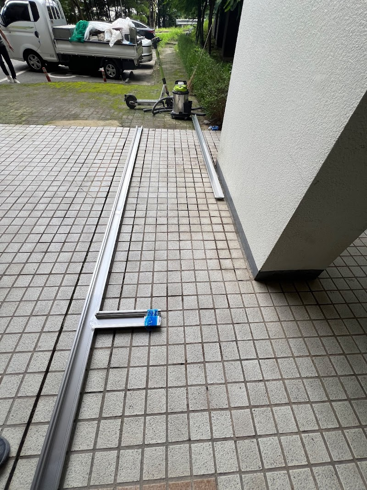
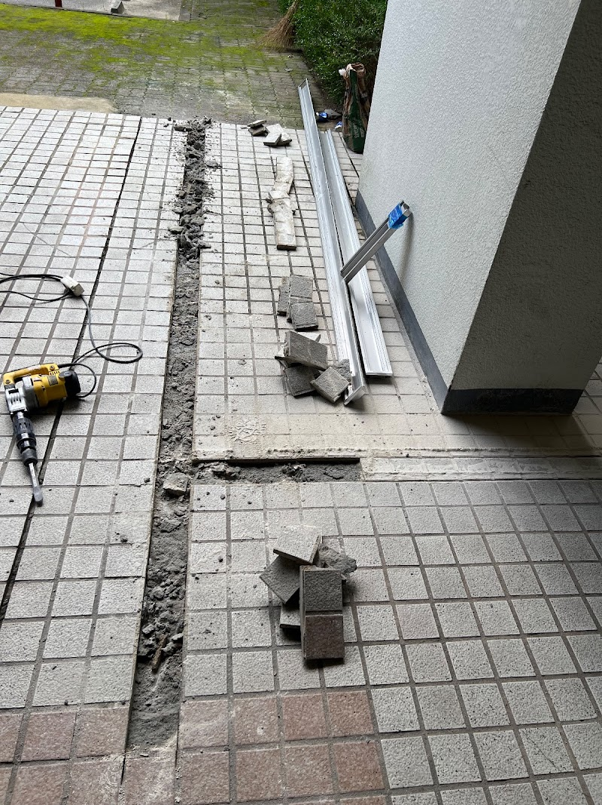
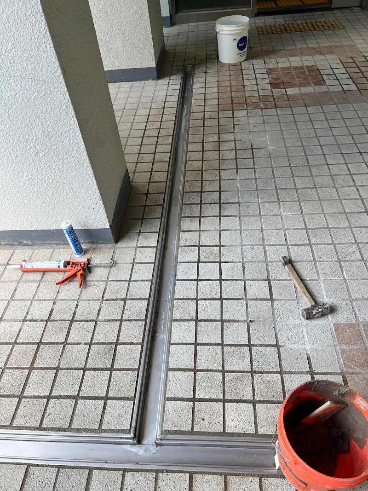

대전 목동 트렌치 배수 시공 — 비만 오면 고이던 물길을 잡았습니다

비가 오면 마당에 물이 고여 건물 쪽으로 흘러들던 자리에 트렌치(배수로)를 설치해 물길을 만든 현장입니다.
어떤 공사였나요
비가 오면 마당에 물이 고여 건물 쪽으로 흘러드는 상태였습니다. 물이 건물 기초 쪽으로 계속 스며들면 아래층 벽에 습기가 차고, 장기적으로 누수와 곰팡이의 원인이 됩니다. 물이 모이는 자리에 트렌치(배수로)를 설치해 물길을 만들었습니다.

트렌치 시공의 핵심은 경사
배수 공사는 트렌치 자체보다 물매(경사)를 잡는 것이 기술입니다. 경사가 조금만 어긋나도 물이 엉뚱한 곳으로 돕니다. 물이 트렌치로 모이고, 모인 물이 배수관으로 빠지도록 경사를 계산해 시공했습니다.

진행 순서
트렌치 구간을 커팅·터파기하고, 트렌치를 설치해 구배를 확인한 뒤 배수관에 연결하고 미장으로 마감했습니다. 마지막에 그레이팅(덮개)을 덮었습니다.

물을 흘려 확인하는 것까지가 공사
시공 후 실제로 물을 흘려, 고이던 자리의 물이 트렌치로 모여 빠지는 것을 확인하고 마무리했습니다. 그레이팅 위에 낙엽이 쌓이면 제 역할을 못 하니 장마 전에 한 번씩 걷어내 주시면 좋습니다.